| THREE LITTLE PIGS 三匹の子ブタ | |
| イギリス民話 | |
| (2015) | |
THREE LITTLE PIGS
三匹の子ブタ
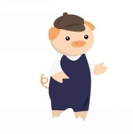 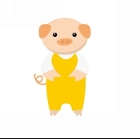 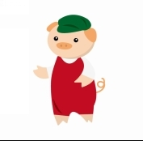
Once upon a time ,
むかしむかし、あるところに、
there was an old Sow with three little Pigs ,
一匹の年老いたお母さんブタと、三匹の子ブタがいました。
and as she had not enough to keep them ,
お母さんブタは、子ブタたちを十分にやしなえなくなったので、
she sent them out to seek their fortune .
彼らの幸運を探すようにと、世間へ送り出しました。
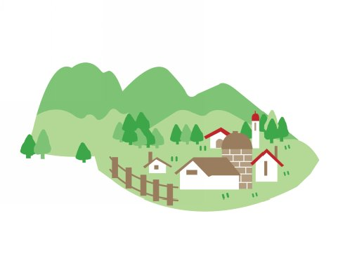
The first that went off met a Man with a bundle of straw ,
長男が家を去ると、ワラの束を持った男の人に出会いました。
and said to him ,
そして長男は彼に言いました。
"Please , Man , give me that straw to build me a house ,"
「おじさん、お願いだよ。家を建てるために、そのワラをボクにおくれよ」
which the Man did ,
その男の人はそうしてくれたので、
and the little Pig built a house with it .
子ブタはそれで、家を建てました。
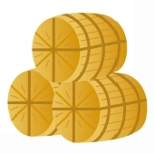 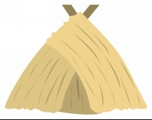
Presently came along a Wolf ,
まもなく、一匹のオオカミがやって来ました。
and knocked at the door , and said ,
そして戸をたたいて、言いました。
"Little Pig , little Pig , let me come in ."
「子ブタくん、子ブタくん、中に入れておくれよ」
To which the Pig answered ,
それに対して、子ブタは答えました。
" No , no , by the hair of my chinny chin chin ."
「いやだね、あごのひげ一本だってダメだよ！」
"Then I will huff and I will puff ,
「それならば、オレ様は怒って、ぷっと息を吐いて、
and I will blow your house in !" said the Wolf .
お前の家を吹き飛ばしてやる！」と、オオカミは言いました。
So he huffed and he puffed ,
そうしてオオカミは怒って、ぷっと息を吐きました。
and he blew his house in ,
そして子ブタの家を吹き飛ばし、
and ate up the little Pig .
子ブタをペロリと平らげてしまいました。
The second Pig met a Man with a bundle of furze ,
次男の子ブタは、ハリエニシダの木の束を持った男の人に会いました。
and said ,
そして言いました。
"Please , Man , give me that furze to build a house ,"
「お願いだよ、おじさん、家を建てるために、そのハリエニシダの木をボクにおくれよ」
which the Man did ,
男の人はそうしてくれたので、
and the Pig built his house .
子ブタは家を建てました。
Then along came the Wolf and said ,
やがて、オオカミがやって来て、言いました。
" Little Pig , little Pig , let me come in ."
「子ブタくん、子ブタくん、中に入れておくれよ」
"No , no , by the hair of my chinny chin chin ."
「いやだね、あごのひげ一本だってダメだよ！」
"Then I will puff and I will huff ,
「それならば、オレ様はぷっと息を吐いて、怒って、
and I will blow your house in !"
お前の家を吹き飛ばしてやる！」
So he huffed and he puffed ,
そうしてオオカミは怒って、ぷっと息を吐きました。
and he puffed and he huffed ,
またまた、オオカミはぷっと息を吐いて、怒りました。
and at last he blew the house down ,
そして、ついに、オオカミはその家を吹き倒し、
and ate up the second little Pig .
次男の子ブタを、ペロリと平らげてしまいました。
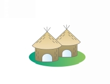
The third little Pig met a Man with a load of bricks ,
三男の子ブタは、レンガの積み荷を運んでいる男の人に会いました。
and said ,
そして言いました。
"Please , Man , give me those bricks to build a house with ,"
「お願いだよ、おじさん、家を建てるために、ボクにそれらのレンガをおくれよ」
so the Man gave him the bricks ,
男の人は子ブタに、そのレンガをくれたので、
and he built his house with them .
子ブタはそれらで家を建てました。
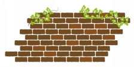 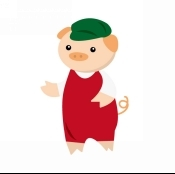
So the Wolf came ,
すると、オオカミがやって来ました。
as he did to the other little Pigs ,
彼は、ほかの子ブタたちへしたようにしました。
and said ,
そして言いました。
"Little Pig , little Pig , let me come in ."
「子ブタくん、子ブタくん、中に入れておくれよ」
"No , no , by the hair of my chinny chin chin ."
「いやだね、あごのひげ一本だってダメだよ！」
"Then I will huff and I will puff ,
「それならば、オレ様は怒って、ぷっと息を吐いて、
and I will blow your house in ."
お前の家を吹き飛ばしてやる！」
Well , he huffed and he puffed ,
かなりオオカミは怒って、ぷっと息を吐きました。
and he huffed and he puffed ,
またまた、オオカミは怒りに怒って、ぷっと息を吐きました。
and he puffed and he huffed ,
それからそれから、オオカミはぷっと息を吐いて、怒りまくりました。
but he could not get the house down .
しかし、オオカミは、子ブタの家を壊すことができませんでした。
When he found that he could not ,
オオカミは無理だと気がつきました。
with all his huffing and puffing ,
すべての力で怒ったり、ぷっと息を吐いたりしても、
blow the house down , he said ,
その家を倒すことはできないのです。だから彼は言いました。
"Little Pig ,
「やい、子ブタ、
I know where there is a nice field of turnips ."
かぶが生っている素敵な畑があるのを、オレは知っているんだがなぁ」
"Where ?" said the little Pig .
「どこなの？」と、子ブタは言いました。
"Oh , in Mr .Smith's home -field ,
「おう！スミスの家の畑さ。
and if you will be ready tomorrow morning ,
もし、お前が明日の朝、じゅんびをするなら、
I will call for you ,
オレはお前を呼びに来るぜ。
and we will go together and get some for dinner ."
そしたら一緒に行って、夕食にいくらかもらってこよう」
"Very well ," said the little Pig ,
「いいね」と、子ブタが言いました。
"I will be ready .
「じゅんびしておくよ。
What time do you mean to go ?"
何時に行くの？」
"Oh , at six o'clock ."
「そうだな、６時だ」
Well , the little Pig got up at five ,
そうして、子ブタは5時に起きました。
and got the turnips and was home again before six .
そして、カブを取って、6時前にはふたたび、家にいました。
When the Wolf came he said ,
オオカミがやって来て、言いました。
"Little Pig , are you ready ?"
「やい、子ブタ、じゅんびはできているかい？」
"Ready !" said the little Pig ,
「できてるよ！」と、子ブタは言いました。
"I have been and come back again ,
「ボクはもう行って帰ってきたのさ。
and got a nice pot -full for dinner ."
おいしそうなのを、夕食に鍋いっぱい、取って来たぞ」
The Wolf felt very angry at this ,
これを聞いて、オオカミはとても怒りましたが、
but thought that he would be up to the little Pig somehow or other ,
でも何とかして、子ブタをつかまえたかったので、
so he said , "Little Pig ,
オオカミは言いました。「おぉ、そうだ、子ブタ、
I know where there is a nice apple -tree ."
オレはとってもおいしそうな、リンゴの木を知っているんだがなぁ」
"Where ?" said the Pig .
「へぇ、どこなの？」と、子ブタが言いました。
"Down at Merry -garden ,"
「メリー・ガーデンさ」
replied the Wolf ,
と、オオカミは答えました。
"and if you will not deceive me I will come for you ,
「もし、お前がオレに、うそをつかなければ、迎えにこよう。
at five o'clock tomorrow ,
明日の5時だ。
and we will go together and get some apples ."
そしたら、いっしょに行って、リンゴを取ろうじゃないか」
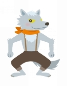 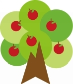
Well , the little Pig woke at four the next morning ,
そうして、子ブタはつぎの朝、4時に起きました。
and bustled up ,
そして、せっせと急いで、
and went off for the apples ,
リンゴがあるところから去り、
hoping to get back before the Wolf came ,
オオカミがやって来る前に、帰ろうと思ったのです。
but he had farther to go ,
しかしながら、子ブタはとても遠くに行かなければならなかったし、
and had to climb the tree ,
木にのぼらなければならなかったので、
so that just as he was coming down from it ,
子ブタが木からおりようとしたときには、
he saw the Wolf coming ,
オオカミがやって来ているのが見えました。
which , as you may suppose ,
それは、そう、あなたが想像するように、
frightened him very much .
子ブタをとっても、おどろかせたのでした。
When the Wolf came up he said ,
オオカミはやって来て、言いました。
"Little Pig ! what ! Are you here before me ?
「おい、子ブタ！ おやおや！ オレより先に、ここにいたのかい？
Are they nice apples ?"
おいしそうなリンゴはあるかな？」
"Yes , very ," said the little Pig ,
「あぁ、とってもね」と、子ブタは言いました。
"I will throw you down one ."
「ひとつ、キミになげてあげるよ」
And he threw it so far that ,
そう言うと、子ブタはとても遠くに、リンゴをなげました。
while the Wolf was gone to pick it up ,
オオカミがそのリンゴを拾いに行っている間に、
the little Pig jumped down and ran home .
子ブタはとびおりて、家に走って帰りました。
The next day the Wolf came again ,
つぎの日、ふたたびオオカミがやって来て、
and said to the little Pig , "Little Pig ,
そして子ブタに言いました。「おい、子ブタ。
there is a Fair in the Town this afternoon , will you go ?"
午後、町で市場が開かれるぞ。行かないか？」
"Oh , yes ," said the Pig ,
「おぉ、いいね」と、子ブタは言いました。
"I will go , what time shall you be ready ?"
「行くよ。何時にするんだい？
"At three ," said the Wolf .
「３時だ」と、オオカミが言いました。
So the little Pig went off before the time , as usual ,
そして、子ブタはいつものように、時間より早くに出かけました。
and got to the Fair ,
そして市場に行って、
and bought a butter churn ,
バターの樽 を買いました。
and was on his way home with it when he saw the Wolf coming .
樽 といっしょに、家に帰っていると、オオカミがやって来るのが見えました。
Then he could not tell what to do .
子ブタはどうすることもできませんでした。
So he got into the churn to hide ,
なので、子ブタは、樽 の中にかくれました。
and in doing so turned it round ,
そして、樽 をころがしたのです。
and it began to roll ,
樽 は回りはじめました。
and rolled down the hill with the Pig inside it ,
樽 は、子ブタを中に入れたまま、丘をころがりおちました。
which frightened the Wolf so much that he ran home without going to the Fair .
それはオオカミを、とてもおどろかせました。オオカミは、市場へは行かずに、家へと逃げていきました。
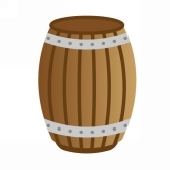
He went to the little Pig's house ,
オオカミは、子ブタの家へ行きました。
and told him how frightened he had been by a great round thing which came down the hill past him .
そして、丘の上から、とてつもなく丸っこいものが、ゴロゴロところがりおちてきて、自分をとてもおどろかせたんだ、と伝えました。
Then the little Pig said ,
すると、子ブタが言いました。
"Hah ! I frightened you , did I ?
「あはは！ ボクがキミをおどろかせたのさ、そうだろう？
I had been to the Fair and bought a butter churn ,
オレは市場へ行って、バターの樽 を買ったんだ。
and when I saw you I got into it ,
それで、キミに会ったもんだから、樽 の中に入って、
and rolled down the hill !"
丘をころがりおりたのさ！」
Then the Wolf was very angry indeed ,
そのとき、オオカミはそれはもう、カンカンに怒りました。
and declared he would eat up the little Pig ,
そして、子ブタを食べつくしてやると、宣言しました。
and that he would get down the chimney after him .
それからオオカミは、子ブタを追って、煙突から室内へおりようとしました。
When the little Pig saw what he was about ,
オオカミがしようとしていることを見た子ブタは、
he hung on the pot full of water ,
水がたっぷりと入った鍋をかけて、
and made up a blazing fire ,
火を赤々と燃えあがらせました。
and , just as the Wolf was coming down ,
そして、オオカミがおりてきた、そのときに、
took off the cover of the pot ,
鍋のふたをサッと取って、
and in fell the Wolf .
オオカミを中に落とし入れたのでした。
And the little Pig put on the cover again in an instant ,
それから子ブタは、一瞬のうちに、鍋のふたをまた閉じて、
boiled him up ,
オオカミをゆであげ、
and ate him for supper ,
夕食に食べてしまいました。
and lived happy ever after .
それからというものは、子ブタは幸せに暮らしましたとさ。
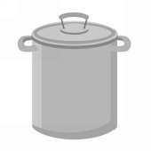